Shaping a unified, beautiful and fun shopping experience.
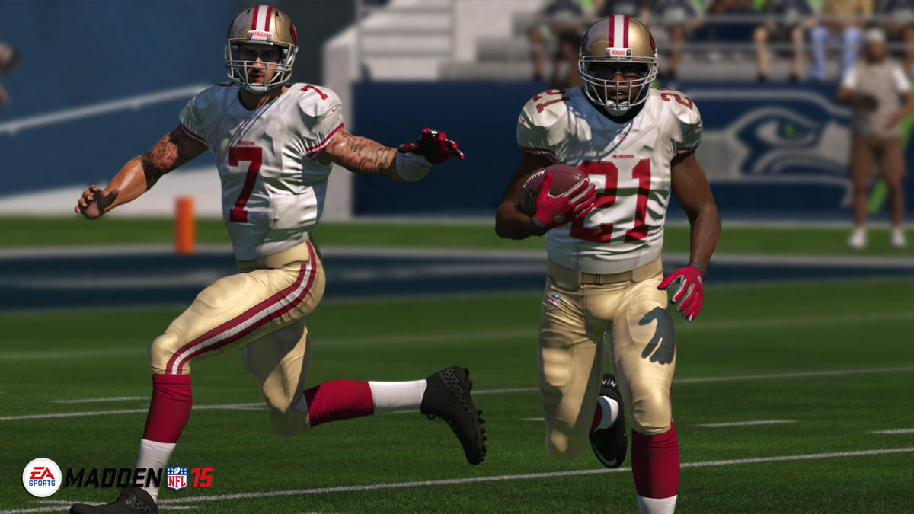
Designing the future of cloud gaming.
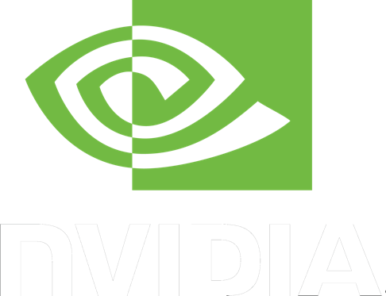 Seeking the next generation of mobile gaming.
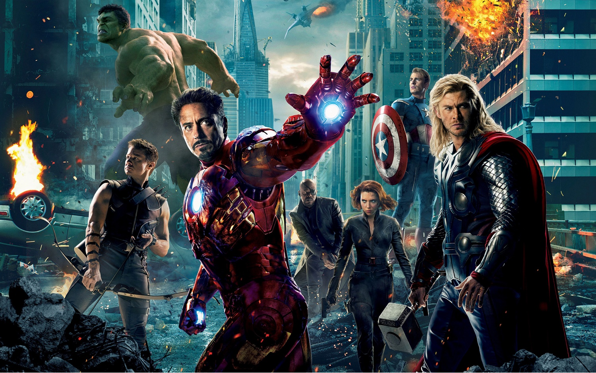
Superpowering your Marvel experience.
Using design strategy to help a company treat cancer.
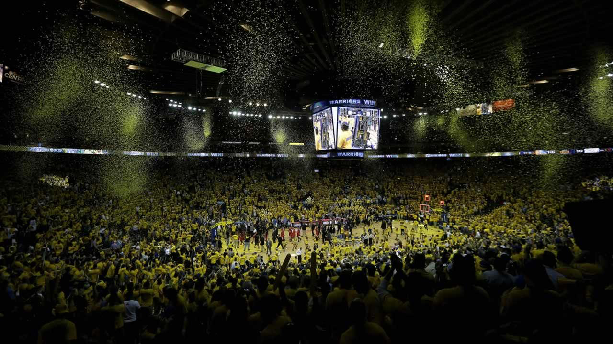
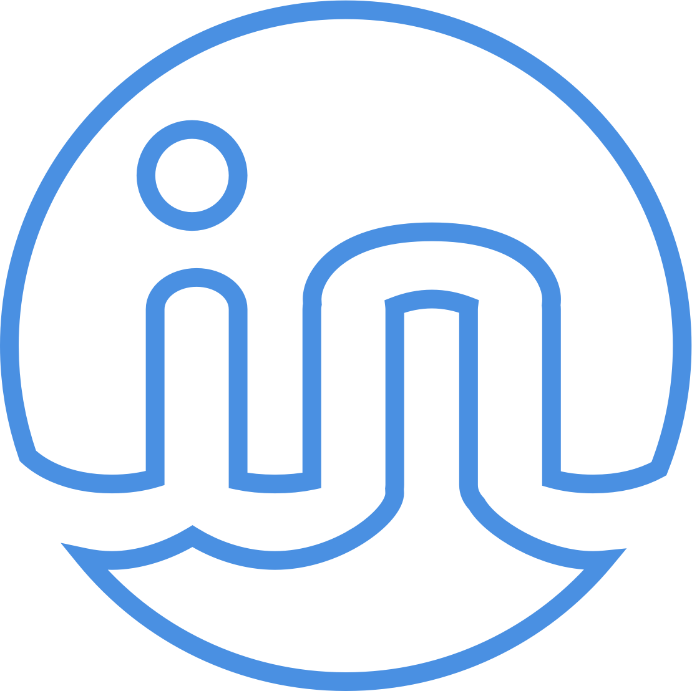 Welcome to the party.
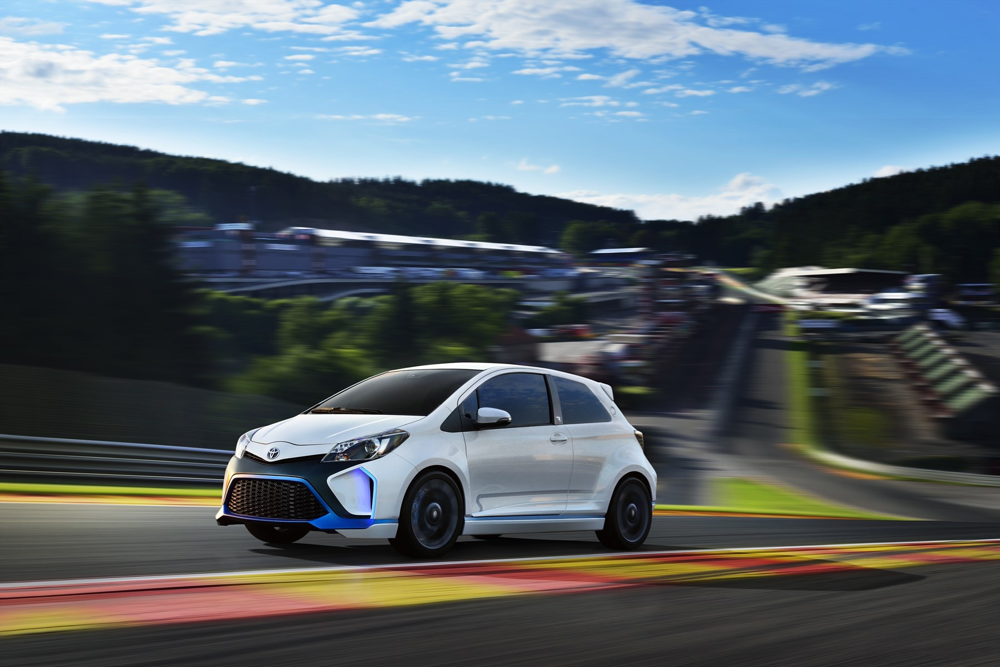
Finding the line between innovation and efficiency.
Hello World Allow me to please (re)introduce myself...
I am an Experience Designer specializing in interaction and
prototyping design. Using a creative approach combined with
user-centered design principles, I want to serve those who
seek to realize their digital curiosities.
I have worked for a variety of large to medium-sized clients
including Sony, Google, Samsung, Toyota, Pearson and various start-ups.
Working in the advertising and technology industries, I have
completed projects to re-define product and brand through strategy,
visuals and code.
When used correctly, design can be a force for positive change
and delightful experiences. In terms of how this translates into
process, I like to be collaborative. Learning from others isn't only
engaging, but can also serve to benefit future endeavors.
Below, you can find a full description of my process and my CV as well:
USER RESEARCH
I believe an intensive design process requires an emphasis on performing user research. Uncovering the "why" behind the way technology should work is what drew me to UX design in the first place.
INFORMATION ARCHITECTURE
User research can provide a never-ending amount of data. Information Architecture is there to narrow, organize and evaluate results in a way A/B testing and analytics platforms simply cannot do.
INTERACTION DESIGN
Ideas, ideas, ideas. While Information Architecture can make sense of a quantity of data, interaction design can expand on and animate data into an engaging, yet practical solution for users. Whether it is using a new prototyping tool, creating visuals, or going straight into code, UI Engineering makes ideas a reality.
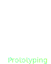
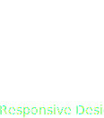
WHAT I'M LEARNING
Staying hungry and foolish is important. I am on the tip of the iceberg in discovering everything out there. Currently, learning to use animation and more advanced front-end skills are on my agenda.
As we continue to see the physical blended with the digital, our
phones become tools. For this project, Google asked our team team
re-imagine what the Google shopping experience can be for the people
delivering the service. What came out of the work was not only a UI
refresh, but a new holistic digital platform for Google and its
shoppers.
Our process consisted of fast, iterative two week sprints. Whether
it was sketching one day or prototyping the next, our team worked
through each of the different parts of the shopping experience
every sprint. This method of working allowed us to quickly pivot
mid-sprint and work through multiple parts of the design at once.
We worked very closely with several
stakeholders: from Google employees to personal shoppers to consumers themselves.
By doing so, our team was able to understand and empathize with each
perspective and set of user needs. Throughout the project, we studied
the behavior of shoppers and consumers and designed ways - both
physical and digital - to make their shopping experience more human.
Before actually beginning the design process, our team conducted
a series of stakeholder interviews and contextual inquiry sessions.
These studies provided our team with greater insights into the
the way Google designed its service. Overall, we found that GSX
employees are proud and excited to provide great service, but
sometimes find their digital tools confusing, cold or unhelpful.
Here is a sampling of our findings:
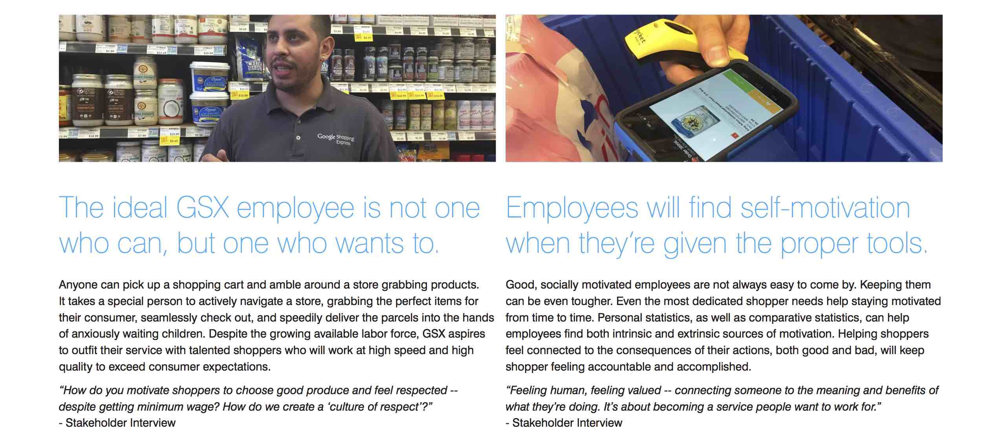
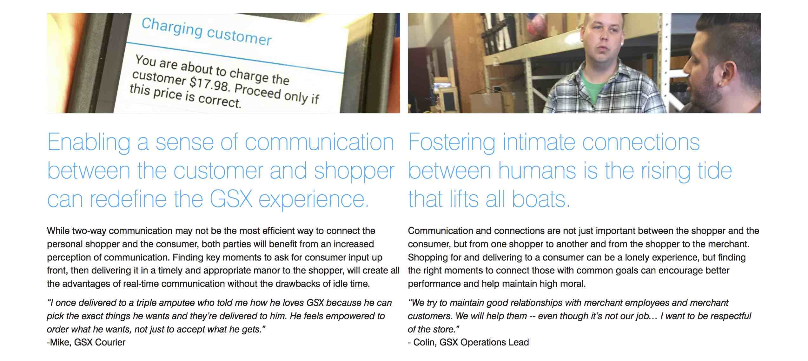
Once we completed the discovery phase of our project, our team
began sketching high-level visual solutions. The sketches shown
below range in fidelity and design, yet still provide interesting
perspectives on how to connect the shopper and consumer. From
in-person encounters to phone-centric tasts, these sketches cover
it all.
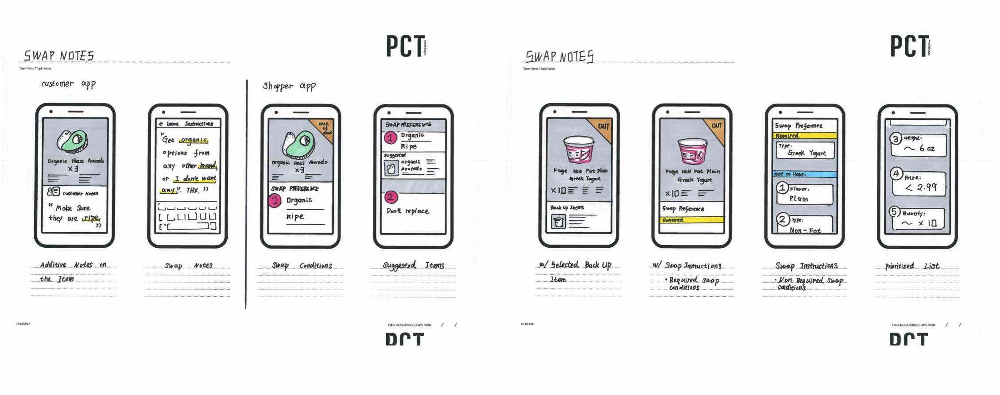
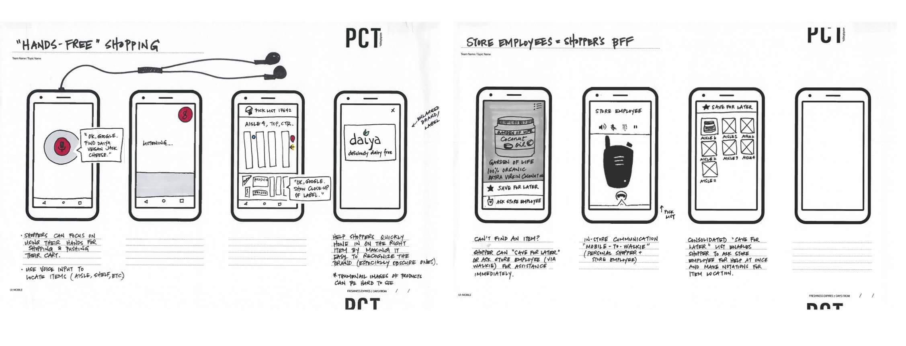
While working with the stakeholders at Google, our team defined
the user requirements and essential flow. For each step in the
shopping process, we created an overall map that looks at each
of steps - Pick, Pay, Pack and Deliver. Below is a sampling of
the Pick user flow that contains a high-level abstracted map,
as well as one with wireframes.
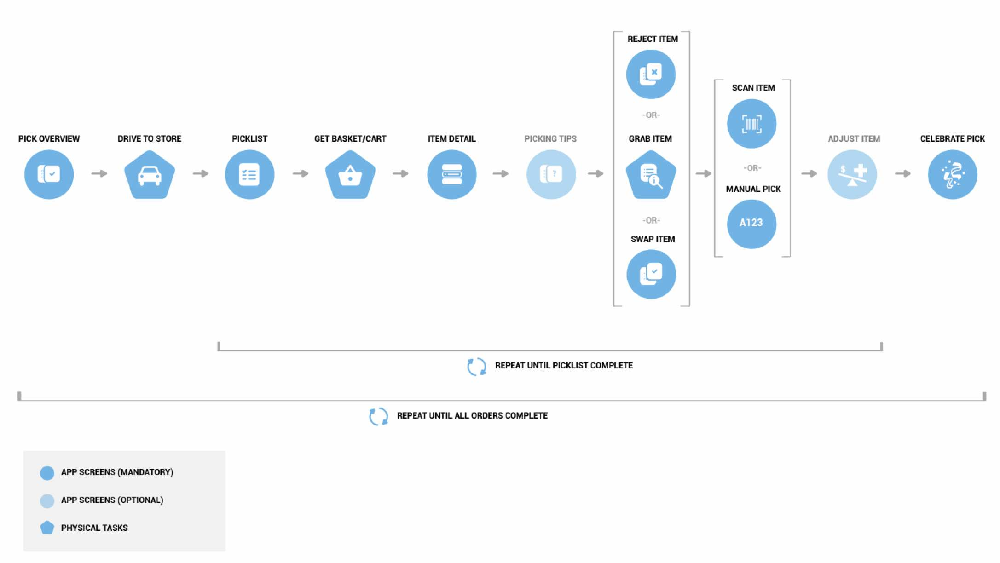
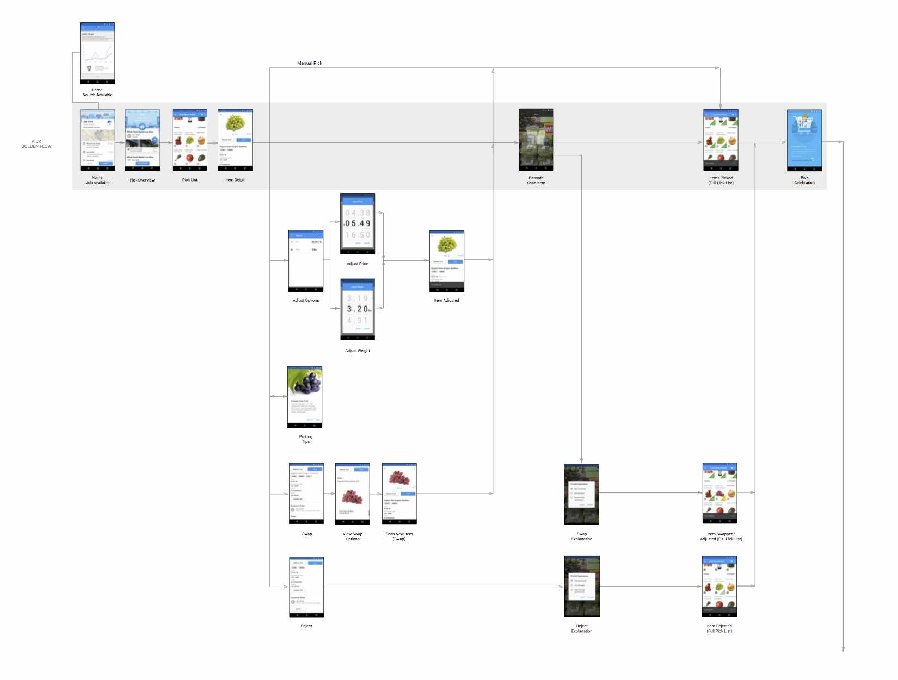
After finalizing the user flow for each step in the shopping
process, our team began turning our sketches into a digital
reality. We primarily used Sketch throughout the design process-
which provided our team with a great deal of flexibility in the
agile cadence we worked within. The flow below represents the
"Golden Path" for a personal shopper picking items for multiple
customer orders.
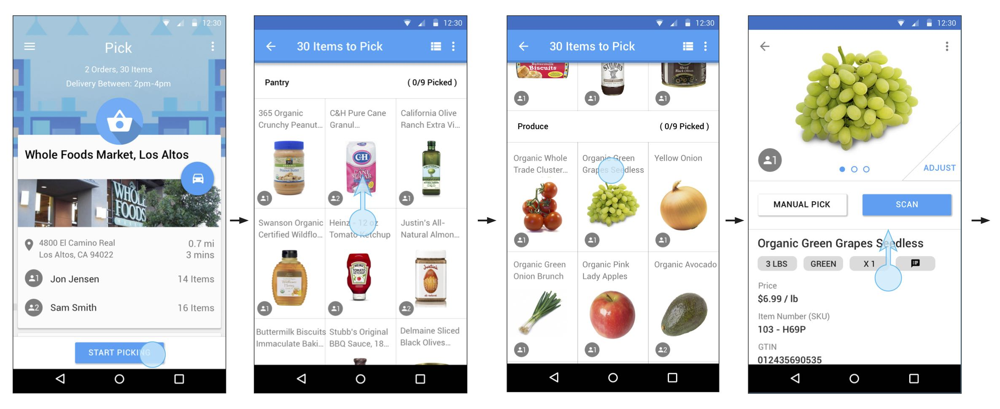
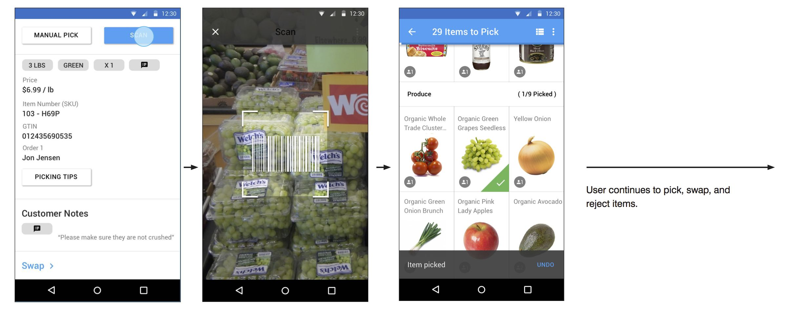
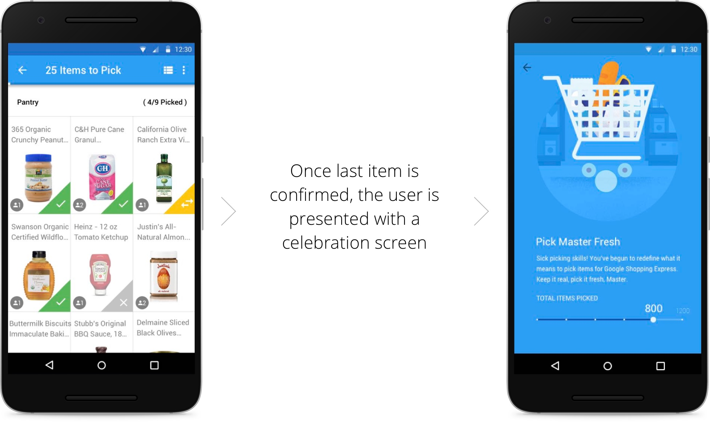
With each sprint, our team continued the design process even
further. We would prototype and add motion design to each of
the different parts of the shopping process. In order to give
our designs more credibility, our team felt it necessary to add
motion studies and clickable prototypes that allowed the client
to better understand our design decisions.
As we continue to see the physical blended with the digital, our
phones become tools. For this project, Google asked our team team
re-imagine what the Google shopping experience can be for the people
delivering the service. What came out of the work was not only a UI
refresh, but a new holistic digital platform for Google and its
shoppers.
Our process consisted of fast, iterative two week sprints. Whether
it was sketching one day or prototyping the next, our team worked
through each of the different parts of the shopping experience
every sprint. This method of working allowed us to quickly pivot
mid-sprint and work through multiple parts of the design at once.
We worked very closely with several
stakeholders: from Google employees to personal shoppers to consumers themselves.
By doing so, our team was able to understand and empathize with each
perspective and set of user needs. Throughout the project, we studied
the behavior of shoppers and consumers and designed ways - both
physical and digital - to make their shopping experience more human.
Before actually beginning the design process, our team conducted
a series of stakeholder interviews and contextual inquiry sessions.
These studies provided our team with greater insights into the
the way Google designed its service. Overall, we found that GSX
employees are proud and excited to provide great service, but
sometimes find their digital tools confusing, cold or unhelpful.
Here is a sampling of our findings:
Once we completed the discovery phase of our project, our team
began sketching high-level visual solutions. The sketches shown
below range in fidelity and design, yet still provide interesting
perspectives on how to connect the shopper and consumer. From
in-person encounters to phone-centric tasts, these sketches cover
it all.
While working with the stakeholders at Google, our team defined
the user requirements and essential flow. For each step in the
shopping process, we created an overall map that looks at each
of steps - Pick, Pay, Pack and Deliver. Below is a sampling of
the Pick user flow that contains a high-level abstracted map,
as well as one with wireframes.
After finalizing the user flow for each step in the shopping
process, our team began turning our sketches into a digital
reality. We primarily used Sketch throughout the design process-
which provided our team with a great deal of flexibility in the
agile cadence we worked within. The flow below represents the
"Golden Path" for a personal shopper picking items for multiple
customer orders.
With each sprint, our team continued the design process even
further. We would prototype and add motion design to each of
the different parts of the shopping process. In order to give
our designs more credibility, our team felt it necessary to add
motion studies and clickable prototypes that allowed the client
to better understand our design decisions.
As we continue to see the physical blended with the digital, our
phones become tools. For this project, Google asked our team team
re-imagine what the Google shopping experience can be for the people
delivering the service. What came out of the work was not only a UI
refresh, but a new holistic digital platform for Google and its
shoppers.
Our process consisted of fast, iterative two week sprints. Whether
it was sketching one day or prototyping the next, our team worked
through each of the different parts of the shopping experience
every sprint. This method of working allowed us to quickly pivot
mid-sprint and work through multiple parts of the design at once.
We worked very closely with several
stakeholders: from Google employees to personal shoppers to consumers themselves.
By doing so, our team was able to understand and empathize with each
perspective and set of user needs. Throughout the project, we studied
the behavior of shoppers and consumers and designed ways - both
physical and digital - to make their shopping experience more human.
Before actually beginning the design process, our team conducted
a series of stakeholder interviews and contextual inquiry sessions.
These studies provided our team with greater insights into the
the way Google designed its service. Overall, we found that GSX
employees are proud and excited to provide great service, but
sometimes find their digital tools confusing, cold or unhelpful.
Here is a sampling of our findings:
Once we completed the discovery phase of our project, our team
began sketching high-level visual solutions. The sketches shown
below range in fidelity and design, yet still provide interesting
perspectives on how to connect the shopper and consumer. From
in-person encounters to phone-centric tasts, these sketches cover
it all.
While working with the stakeholders at Google, our team defined
the user requirements and essential flow. For each step in the
shopping process, we created an overall map that looks at each
of steps - Pick, Pay, Pack and Deliver. Below is a sampling of
the Pick user flow that contains a high-level abstracted map,
as well as one with wireframes.
After finalizing the user flow for each step in the shopping
process, our team began turning our sketches into a digital
reality. We primarily used Sketch throughout the design process-
which provided our team with a great deal of flexibility in the
agile cadence we worked within. The flow below represents the
"Golden Path" for a personal shopper picking items for multiple
customer orders.
With each sprint, our team continued the design process even
further. We would prototype and add motion design to each of
the different parts of the shopping process. In order to give
our designs more credibility, our team felt it necessary to add
motion studies and clickable prototypes that allowed the client
to better understand our design decisions.
Playstation Now Role: Product Designer, Team: 30-50 people, Length: 8 months
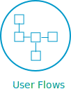
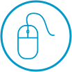
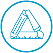
The gaming industry is going the way of films- exploring new digital
horizons and technologies. With Playstation's newest product, the
company asked itself how it could take the gaming industry into the
future by putting its games in the cloud. Similar to how users would
stream other forms of media- whether its films or music- Playstation
Now is ushering in a whole new era of gaming.
Working for a massive, global company with an equally large user-base
requires designers to be patient, empathetic and precise. Even a simple
mistake in an error message or misplaced dropdown can negatively
affect the experience of tens of millions of users. In order to coordinate
such a massive effort, the Playstation engineering and design teams
worked in a highly peculiar, but precise form of agile methodology to build this
amazing product.
Supporting up to five different engineering
teams and working toward an aggressive release schedule can be a
daunting experience for designers. But maintaining a regular release
cadence and process of creative review proved healthy and effective.
Playstation Now is still a young product and has the potential to change
the industry for the better. For now, it is beating every expectation
promoted by industry analysts and is constantly looking to improve
the Playstation gaming experience for gamers in the US and Japan.
In order to design for distinct users, languages, laws, and cultural
differences, our team had to create grand user flow diagrams.
These user flows could include legal, cultural and cognitive
differences and went beyond the normal "box and arrow" approach
that most use in the industry. For a product as complicated and
global as Playstation, our team needed to construct an experience
document that was simultaneously dense, yet clear.
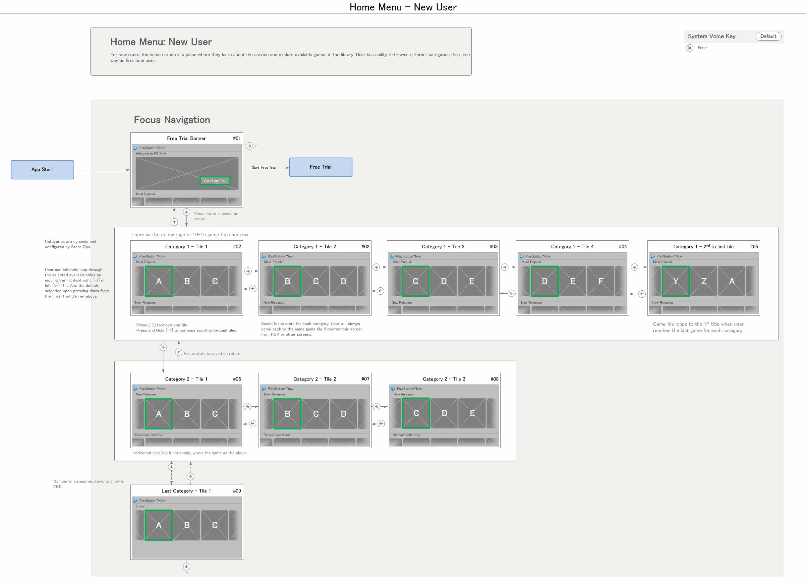
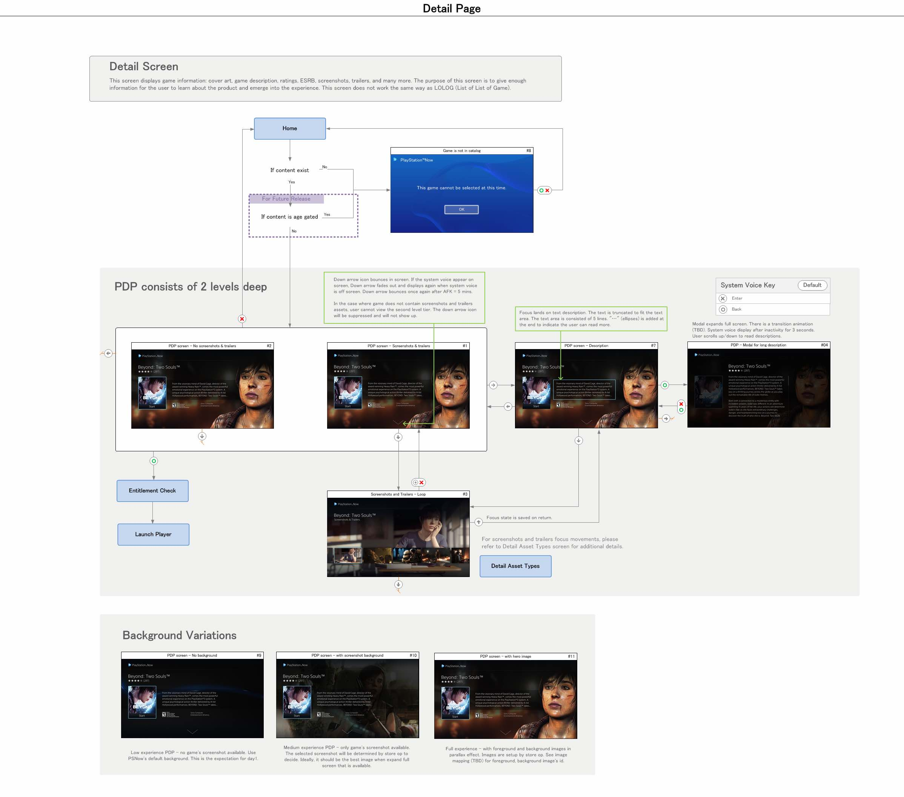
The PS Now team's mantra was "test early, test often."
A newly created team at Sony, the Playstation Now team decided
to try new techniques and experiment with new ways of building
a product. This included setting up multiple user testing
sessions each product release cycle. In order to anticipate user
needs and reactions to new products, our team gathered requirements
quickly and tested prototypes and clickable demos often.
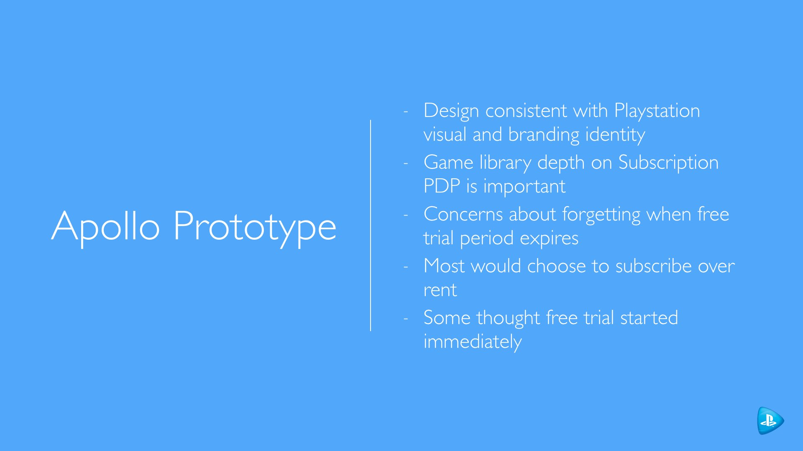
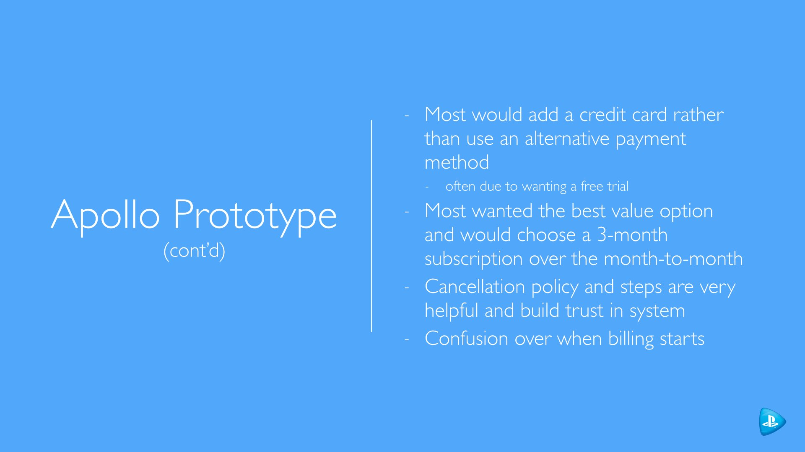
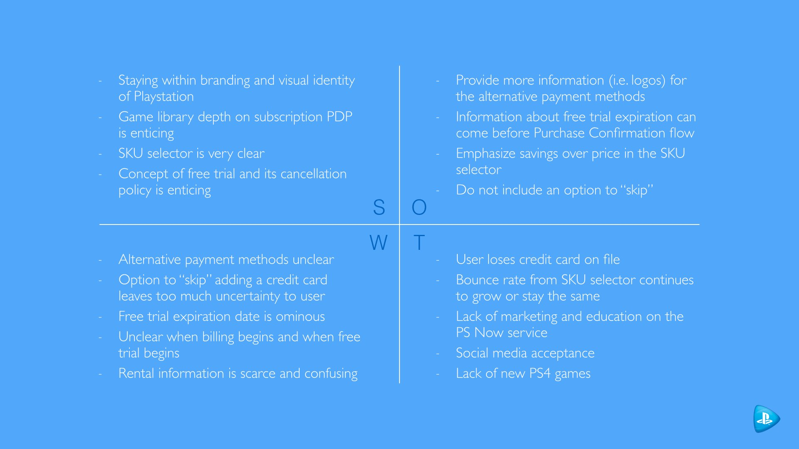
In order to prepare for the user testing sessions, our team would
place a higher importance on prototyping and the need to constantly
innovate. Motion design and prototyping proved a fun and enriching
creative break for the designers at Sony. While not my primary expertise,
motion design became a growing interest for not only myself but
the rest of the design team. We were able to develop some of
our most engaging and provocative work during these short design
sprint prototyping sessions.
With each large client comes an even greater challenge. This makes
a campaign and re-design especially important and large in scope
when working for the world's leading car brand - Toyota. The automotive
industry is in somewhat of a renaissance as tech industry icons
change the definition of a car with each new technological enhancement.
Toyota can easily see the watershed change coming, and has decided
to respond with a brilliant new focus on technology - both in its
cars and in its process.
During the re-design of toyota.com and the 2016 Corolla Campaign,
our experience design team was tasked with an assortment of projects.
Ranging from creating simple, yet important banner ads to creating
a massive competitive audit inventory, our team found ways to distill
large and complex amounts of research and information into engaging,
useful digital experiences.
Within advertising, it can be difficult to
maintain a coherent, singular process among all projects. Rather
than forcing a dominant process over others, our team decided to
institute a creative review process that allowed each member of the
team to independently determine the best workflow for a particular
project. While we all worked separately, each member contributed
greatly to the overall vision and direction of Toyota's digital
initiatives.
During my time working with Toyota, I was tasked with defining,
organizing and writing a comprehensive competitive audit. The
audit covered both direct and indirect competitors, as well as
complementors (companies competing in a relatively similar space).
The point of focus for each of these audits was to
dissect the visual and interactive design of each competitor
and discuss what in the industry is enhancing digital presence
and what is not. Here is a sampling:
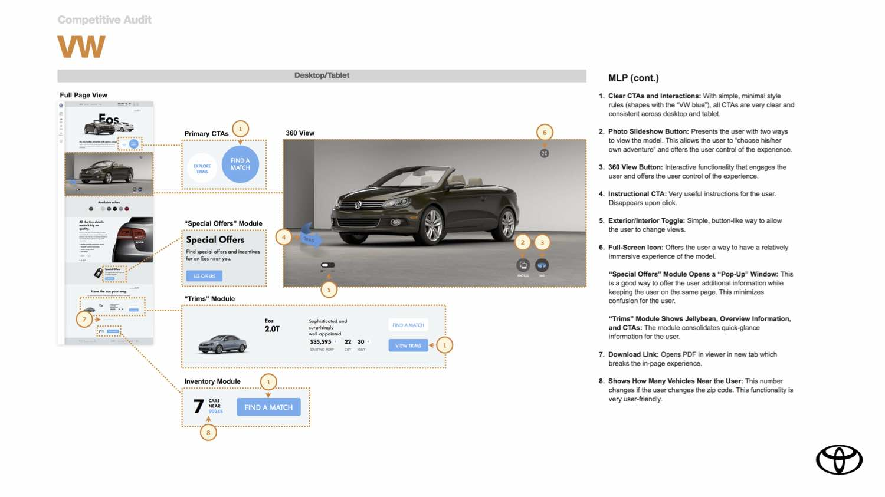
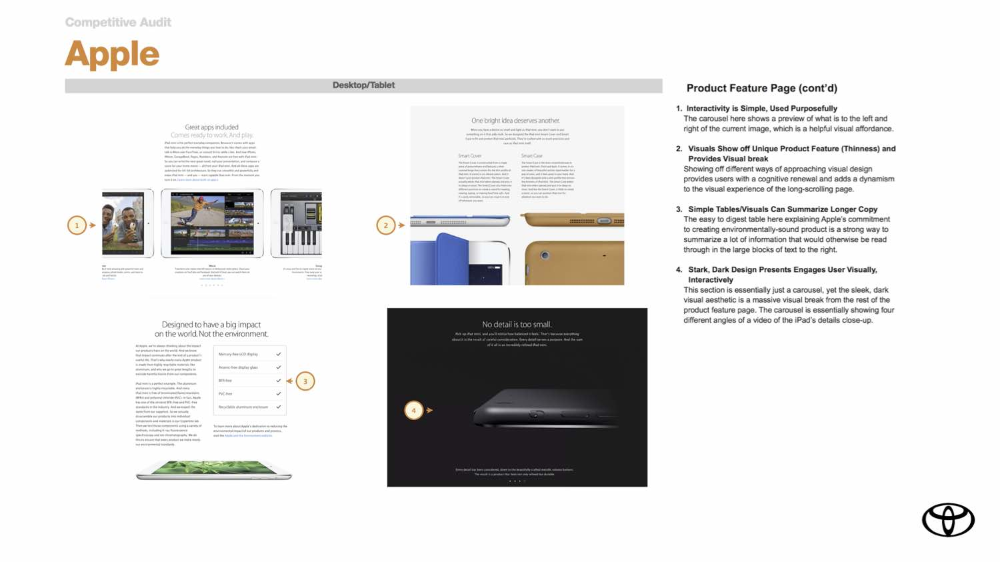
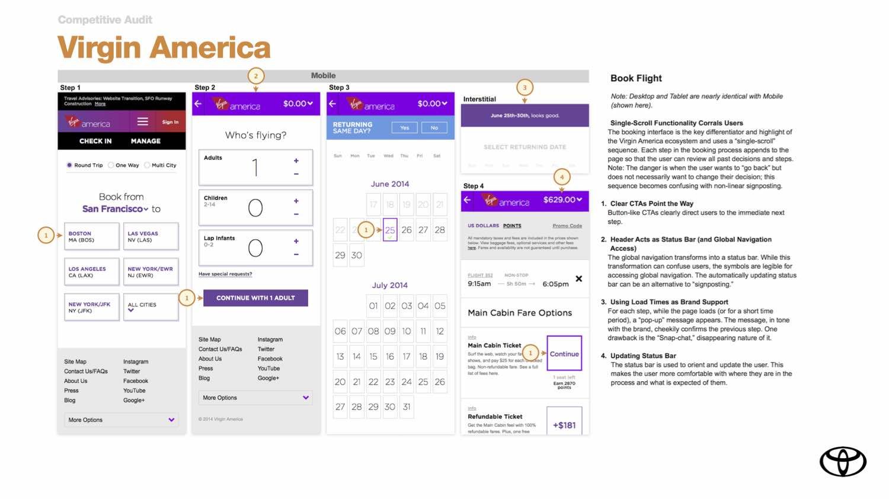
As our team continued the re-design process for toyota.com, we
decided to engage in a series of usability tests to determine
the current site's usability improvements. Over the course of
a week, we sat down with several different subjects and conducted
exhaustive studies into user behavior on the site and ended each
session with a cardsort afterwards. After the sessions were done,
I decided to create a visual experience map to graphically make
sense of the user's high and low points in the site navigation.
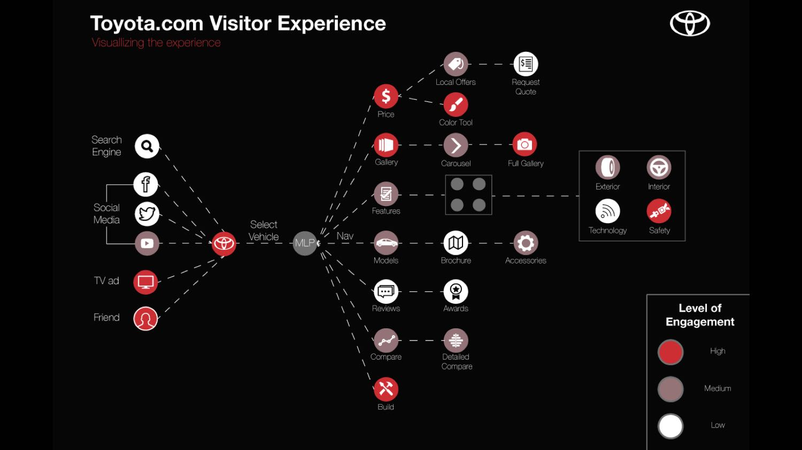
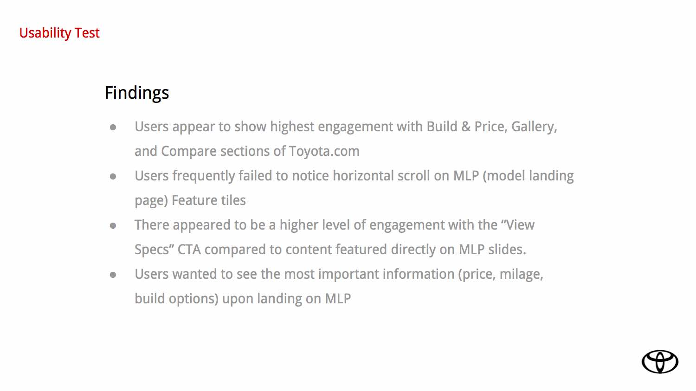
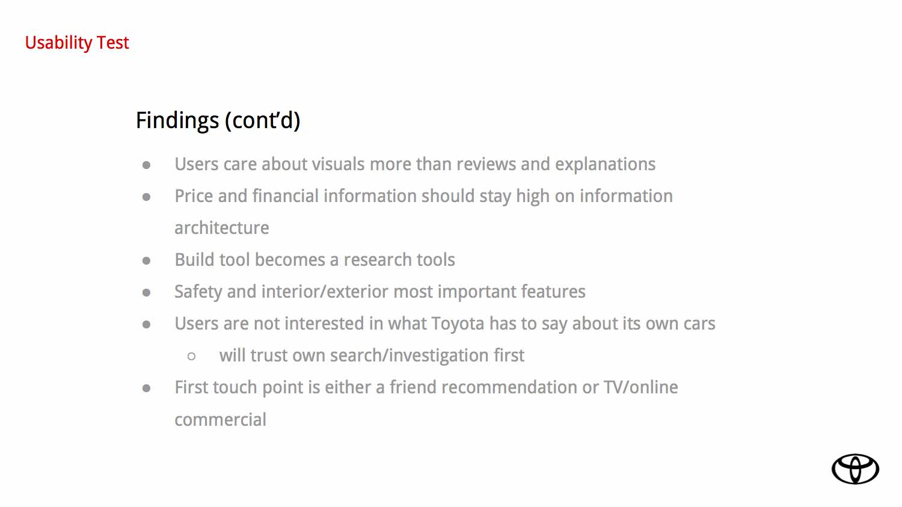
For wireframing, each member of the team was given a certain section of the
toyota.com re-design every week. The process was different, yet
effective. Essentially, we were able to produce work at a much
faster pace and could easily review new work every week. While
we were not able to iterate and move as quickly, the process
suited the situation: we were not ready to begin the full re-design.
These wireframes served as a preliminary, more conceptual design
artifact before the actual re-design began.
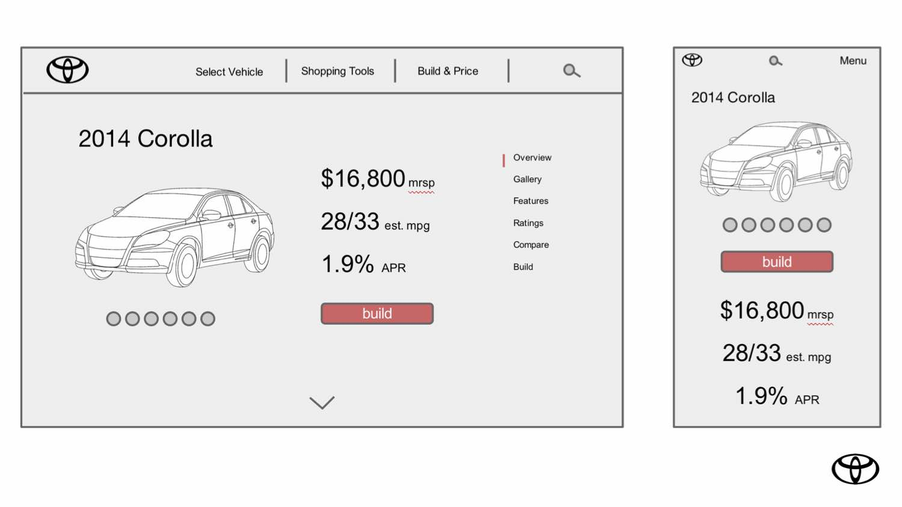
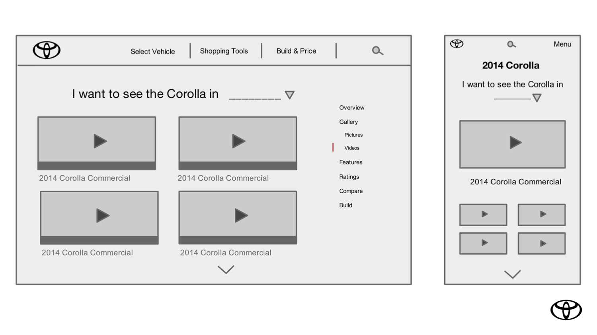
Similarly to the wireframes, I continued to create and use
more conceptual design methodologies to explore different
interaction patterns. With prototyping, I was able to more quickly
realize the experiential dimension of the design and iterate
more quickly. The following prototypes are for separate projects:
the first being web prototype focusing on interaction; and the
second being a prototype for a mobile banner ad.
After returning to San Francisco, I continued to freelance. My first
client was an unlikely challenger to an established gaming industry-
NVIDIA. Traditionally, a graphics card company, NVIDIA sought to
develop niche products for gamers seeking a new option. Delving in
to the mobile gaming world was a choice that would require a huge
undertaking - both from a hardware and software perspective.
NVIDIA challenged our team to re-design the brand, tone, voice and
digital identity of their new site for an upcoming product launch.
To accomplish this, our team had to think lean, inclusive and scrappy.
From a branding perspective, we tried to make NVIDIA a brand on the
verge of shaking up a long established industry - partnering with
new services such as Twitch, Inc. to bring users a new online game
watching experience.
On the digital front, we formed a completely
new digital experience for NVIDIA - bringing their design and aesthetics
to a more modern interactive and visual style. To do so, our team
holistically re-designed multiple touchpoints of NVIDIA's digital
experience. From conducting a competitive audit to sketching to
prototyping - our team completed each of the different parts of the
process in two week sprints. Working closely with the client, we
developed a totally new digital platform from which NVIDIA can launch
its new mobile gaming business.
Our creative process first involved sketching away at different
concepts for the interactive introduction to NVIDIA's new site.
We focused heavily on visually conveying the technological
superiority of NVIDIA's new hardware. While working through the
competitive audit, we would take breaks to review each other's
sketches before client meetings. This is a sampling of some of
the sketching I did for the interactive intro:
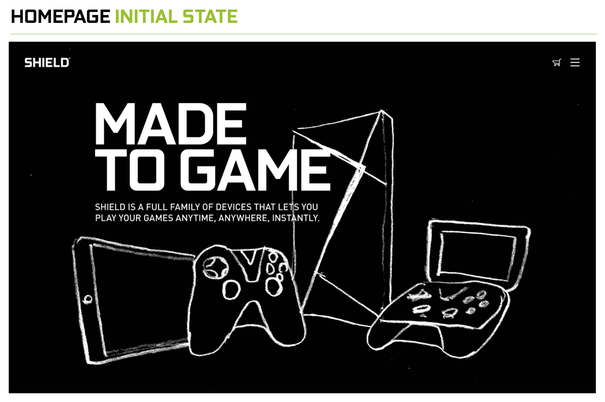
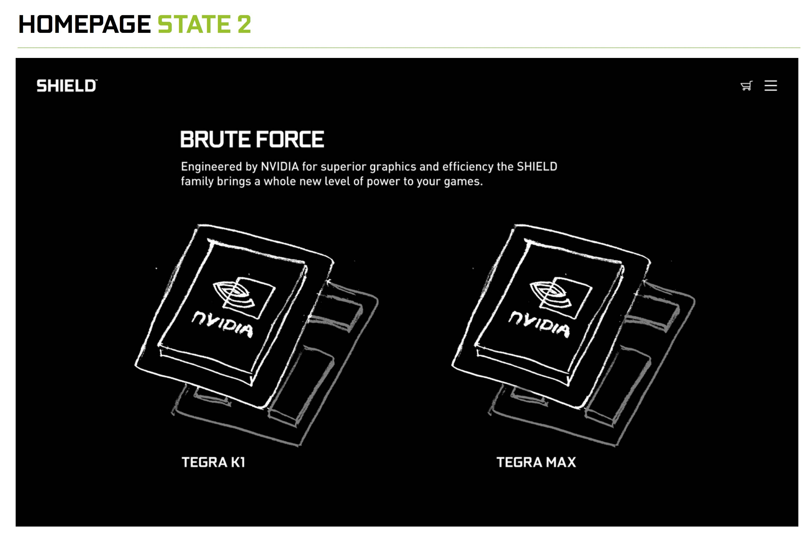
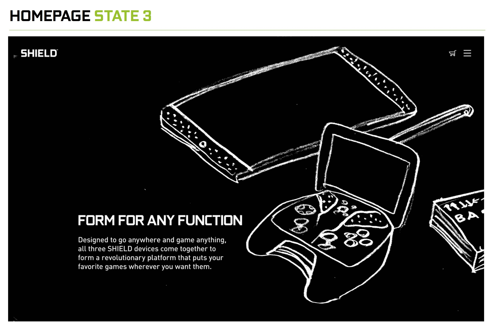
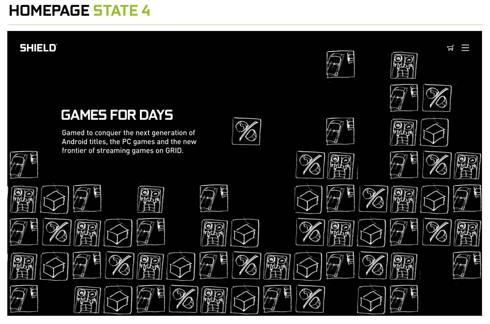
For the wireframing process, our team decided to split up work
for each section of the site. My section consisted of wiring
the product detail page as well as the community support and
help guides. The wireframing progressively changed over the course
of each sprint - going from simple "box and arrow" diagrams to
fully visualized concepts for each section.
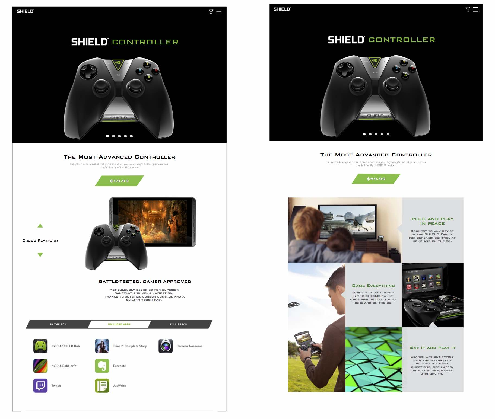
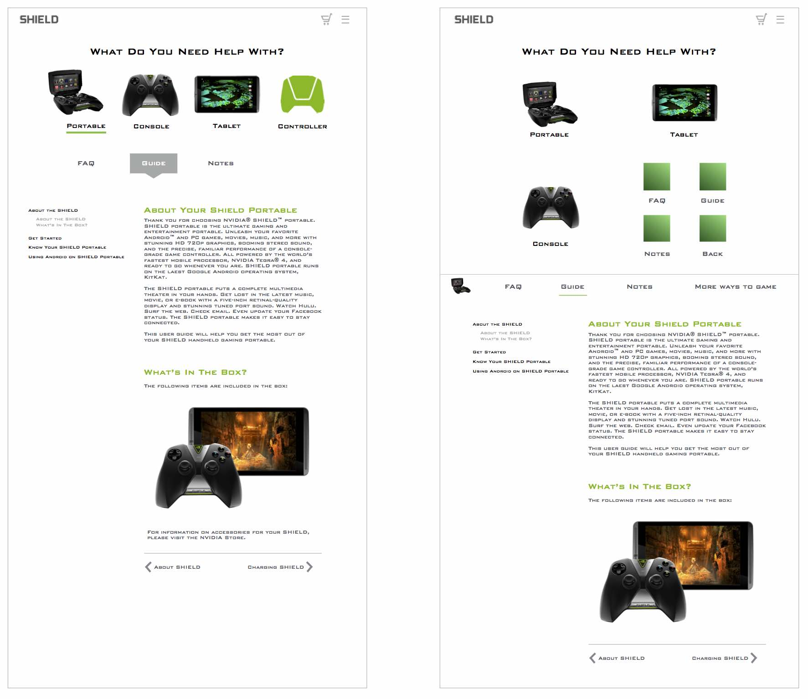
With every creative review passing, we began fully realizing
each new section - fully visualizing each section responsively.
During these design sessions, we worked closely with our engineering
team to mathematically determine the breakpoints for the multiple
iOS and Android devices. Doing so greatly helped the productivity
of our engineering teams and made the entire re-design process run
more smooth due to my familiarity with responsive design and
front-end development techniques.
While freelancing in Los Angeles, I had the great opportunity to work with
Samsung on their partnership with the upcoming Avengers: Age of Ultron
film. The task was simply stated: superpower our users' Marvel experience.
The process of doing so was not so simple. A partnership of these
proportions required a lot of thinking, research and branding analysis.
Yet more than anything, the opportunity requried our team to think
more from a campaign-oriented service design perspective.
Much of the project revolved around a massive
media campaign at the Comic-Con festival in San Diego. In order to
"superpower" the experience of users at the event, Samsung wanted our
team to concept ways to interactively engage users while in the physical
space. To do so, we would concept ideas through multiple media: from
event plans to service design initiatives to wireframes, we fabricated
different ways to engage Samsung users. Using different features exclusive
to Samsung phones such as its water-resistance to its heart rate detector,
we allowed fans to connect with their Avengers heroes on both a digital
and physical level.
The process entailed conducting several stakeholder and user
interviews at first. These sessions gave our team the necessary
research, background and information to begin a proper digital
and service design process. In order to enhance the branding of
the event, we wanted engage the users in a more enriching branded
experience. From there, our team began to match different
functionality features of Samsung phones to the superpowers
of the Avengers characters. By doing so, users would become
actively engaged in the experience of interacting with the Avengers
heroes in a gamified experience that provided them with new prizes
and hidden features in the app as they completed more tasks. Below
is a sampling of our ideas:
Inner Circle Role: Product Designer, Team: 2 people, Length: ongoing
Returning to San Francisco brought me another amazing opportunity
outside of the normal day to day freelance life. Partnering with
someone interested in the intersection of sports and technology,
I was able to work on a new mobile app that engages fans with the
athletes they love to watch. It was important to differentiate the
app from other services like Twitter and Instagram which give users
a glimpse, if but a brief and non-contextual, look into the life
of an athlete they adore.
To find the competitive and interactive advantage for Inner Circle,
we had to engage fans on a more personal level. Fortunately, we are
able to partner with a basketball superstar and are able to use his
strong media presence to speak to and interact with fans in a truly
new and unique way. Allowing for services like a custom-tailored
live chat experience, polls, and contests would allow athletes to control the way they want to
connect with their fans.
Our process consisted of both in-person
and remote working sessions where we would interview potential users
and stakeholders as well as concept, develop user flows and requirements
and start sketching. There were no sprints, no deadlines to meet.
Just a room of open minds and excitement at the idea of bringing
fans a new tailored experience. Throughout the design process, we
devised new features, refined old ones, pitched to potential investors,
recruited engineers and began what could be the start of a really new
experience to bring fans into their favorite athlete's inner circle.
In order to provide something valuable to users, our team did
not want to become another "me too" product that simply threw on a
different visual design from a competitor. Instead, we interviewed
potential stakeholders and users to find out what would genuinely
make users excited about engaging with athletes.
On the flip side, we also asked professional athletes why they
would even consider using the service in the first place and how
it could benefit them. These are some of the findings that came
from these sessions:
After gathering data and research on the subject, our team began
concepting user flows and sketching out basic features of the
app. Whether it was the live chat feature or the polls and contests,
we sketched out new ideas each week to build up different designs
and interactive treatments for each section of the app. We even
invited some of the stakeholders we interviewed to participate
in the design process and figure out some basic ideas of where
they would expect to look for certain features of the app. These
sessions proved to be highly productive and interesting.
While my business partner began looking for investment and recruited
engineers, I continued the design process and completed different
parts of the user requirements checklist. I worked through
both the fan and athlete sides of the app in an iterative fashion.
Each iteration required an overview from other stakeholders to
validate my design decisions and to brainstorm and ideate on new
interactive and visual directions for the app. While still in its
infancy, the design direction is guiding engineering efforts
and will continue to enhance the future experience of athletes'
inner circles.
An interesting, incredibly unique consulting opporunity recently came
to my attention and it was one I could not help but empathize with.
Lung cancer, by far the most deadly cancer in the world, has taken
the lives of too many, including some I knew personally. The opportunity
to potentially fight it- even on digital research level - was one
I simply could not turn down. While there was not much specific design
work to show from the consulting work, I am able to discuss the more
service design-oriented work I did over the course of my time with
Driver Group.
Driver's mission is to essentially extend
the lives of lung cancer patients by sequencing the DNA of patients
and using that information to determine how to provide targeted treatment.
This targeted treatment is specific to each patient and is tailored
to the literal DNA affected by the lung cancer. Instead of finding the
right cancer for the drug, Driver searches for the right drug for
the cancer.
My consulting work with Driver primarily consisted of doing
service design work that compiled a comprehensive list of both
direct and indirect competitors, as well as complementors. While
working through each audit, I conducted a visual and interactive
exploration of each company's web and mobile properties. Driver had
a unique opportunity to not only move past the competition through a
strong design aesthetic, but also to enhance its DNA sequencing
process with better service design.
With a great deal of information and research coming from the
user interviews and competitive analysis, I decided to help
wireframe some of the sample pages they would need for the MVP.
These included a patient list, a case list and research report
that can be delivered both digitally and physically to their
main partner - the physicians and research institutions. The
information in these reports are for placement only and do not
contain any actual information regarding the health of a patient.


 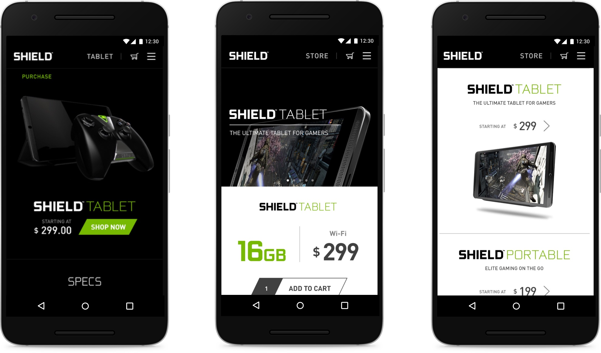
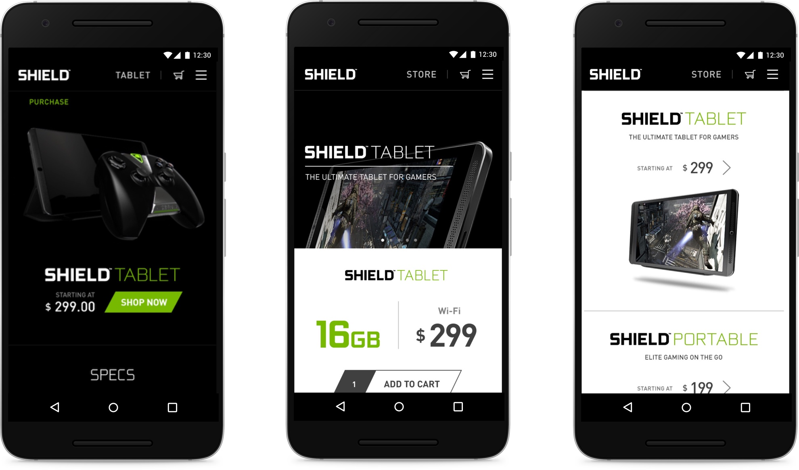